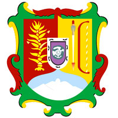

Nayarit fue uno de los últimos territorios admitidos como Estado de la federación mexicana, lo cual ocurrió el 1 de enero de 1917.1 Por Decreto, el 13 de marzo de 1837 surge el Departamento de Tepic, de conformidad con el Artículo 8 de las Bases y Leyes Constitucionales de la República Mexicana de 23 de octubre de 1835; el cual contaba con una superficie de 1868 leguas cuadradas y su población era de 62 620 habitantes. Se dividía en 2 Ayuntamientos: Tepic y Ahuacatlán. En 1838 el Departamento de Tepic contaba con una población de 67 180 habitantes. Anteriormente se le conocía como el 7º Cantón de Jalisco, nombre que retomó el 18 de septiembre de 1846 una vez que el estado de Jalisco se integró al Pacto Federal, constituyéndose en 5 Departamentos: Acaponeta, Ahuacatlán, Sentispac (hoy en día Santiago Ixcuintla), Compostela y Tepic. En el año de 1858 el 7º Cantón de Jalisco registró una población de 74 538 habitantes. Miguel Miramón decretó la creación del Territorio de Tepic el 24 de diciembre de 1859. Poco después el departamento de Nayarit contaba con 97 000 habitantes y se dividió en 6 distritos: Tepic, Ahuacatlán, Compostela, Acaponeta, Santiago y San Luis. Restaurado el Federalismo, pasó a ser el Distrito Militar de Tepic, el cual se erigió por Decreto del 7 de agosto de 1867 emitido por el Presidente Benito Juárez García; se constituía en 11 Ayuntamientos: Ahuacatlán, Jala, Villa de Ixtlán, Compostela, San Pedro Lagunillas, Santiago Ixcuintla, Acaponeta, Tepic, Tuxpan, San Blas y Xalisco. En el año de 1877 el Distrito Militar de Tepic tenía una población de 95 000 habitantes, registrándose así un decremento poblacional ocasionado sin lugar a dudas por los constantes disturbios de la época. Posteriormente, el 18 de diciembre de 1884, se elevó al rango de territorio federal de Tepic con el nombre de Tepic. Dicho territorio fue administrado por el gobierno federal hasta 1917, fecha en la que el territorio, se constituyó como estado soberano. Tepic es la ciudad más grande y la capital del estado, la cual está conurbada con el Municipio de Xalisco. Le siguen en importancia el área conurbada de Bahía de Banderas, Tuxpan, Ixtlán del Río, Acaponeta, Santiago Ixcuintla, Compostela, Tecuala, Estación Ruiz, Villa Hidalgo y Las Varas (Nayarit). Más del 60 % del PIB estatal está conformado por el sector servicios. En primer lugar están los servicios comunales, sociales o personales; le siguen el comercio, hoteles y restaurantes, así como servicios financieros, de alquiler y seguros.Las artesanías de los grupos étnicos huicholes y coras han cobrado fama a nivel mundial debido a su elaboración, entre ellos podemos destacar las artesanías hechas con chaquiras y los bordados, los cuales son famosos por sus llamativos colores y patrones geométricos. Estas artesanías tienen una fuerte influencia religiosa, y son inspirados en animales, plantas, y otros elementos del entorno de Nayarit.
